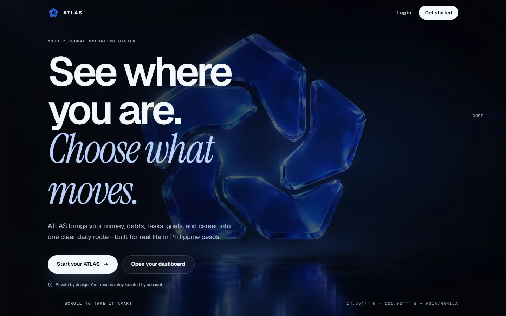

ATLAS
Your personal operating system
Your whole life,
on one route.
atlas.kdvwebsiteservices.com

One workspace · eight views
ATLAS
Plans, money, goals and career, in one connected workspace.
Next.js · TypeScript · Supabase · PostgreSQL · AI analyst
Designed & built by Keith Vergara
atlas.kdvwebsiteservices.com